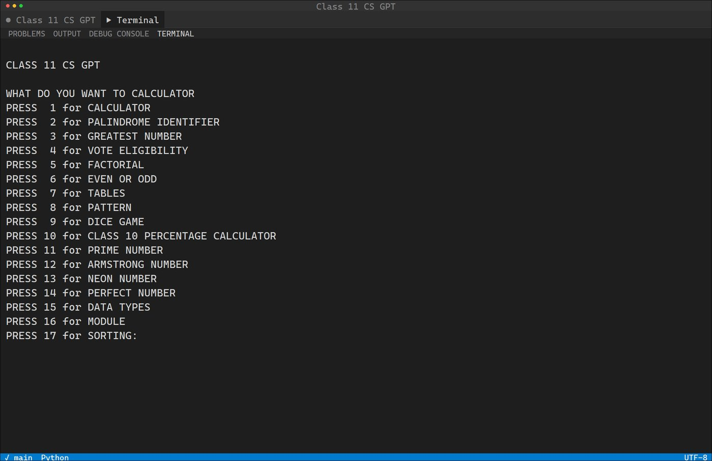

07 · Learning tool
CS GPT for CBSE 11 & 12
The CBSE Computer Science syllabus as runnable programs inside a VS Code-styled window. The study tool I wished I had at school.
Built by Adithya V, computer science student at KCT, Coimbatore.


About CS GPT for CBSE 11 & 12
CS GPT turns the CBSE Computer Science syllabus into programs you can run. It opens in a VS Code-styled terminal window and lets you pick a topic from a menu.
The Class 11 app has seventeen programs, from a calculator, palindromes and prime, Armstrong, neon and perfect numbers to patterns, tables, a dice game, data types, modules and sorting.
The Class 12 app covers functions and their arguments, scope, recursion such as the Tower of Hanoi, exception handling, text, binary and CSV file handling, stacks, SQL and Python-SQL connectivity. Every program can show its own source code before it runs.
Related work

More projects by Adithya V
- TQQ ChatboxFive fine-tuned models, one app
- Ryuu Explainer AIOffline AI assistant
- KCT IDEA Lab websiteCollege website, built solo
- Personality AICharacter chatbot
- PawFinderWeb platform, live
- Automobile LabHardware and web interface
- Ryuu v1 modelsFive open models